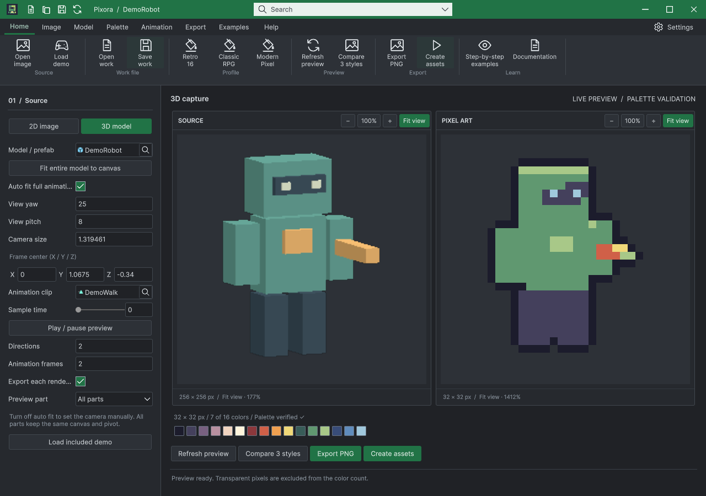
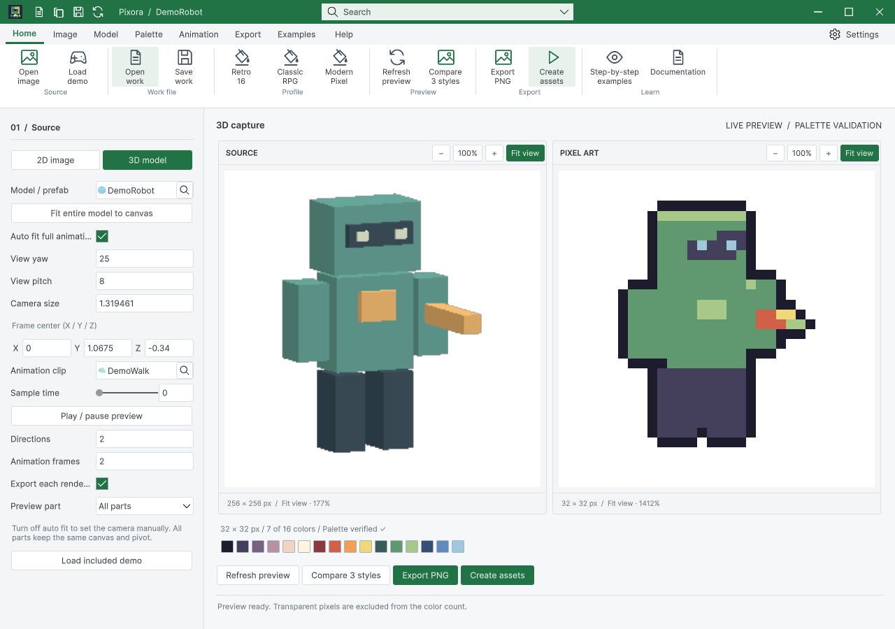

Tracefolio REPORTS & ISSUES
Tracefolio REPORTS & ISSUESPNG와 함께 저장하는 재편집 작업 원본
완료이미지·팔레트·그리드·톤·촬영·애니메이션을 .asset 작업 파일로 저장하고 다시 열어 수정·재출력합니다.
작업 결과
재편집 작업 원본 저장/열기, 출력 옆 자동 저장, 예제 원본 두 개 구현·실행 검증 완료. 코드 8943c308 푸시.
변경 내용
적용 내용
리본 작업 열기/작업 저장과 명령 검색의 작업 사본 저장을 추가했습니다. PNG에는 이름.work.asset, 일괄 출력에는 PixoraWork.asset을 저장합니다. 더블클릭하면 별도 Studio로 열립니다. 입력·톤 기준 이미지와 팔레트는 내부 사본입니다. 격자, 프레임·방향·FPS·부위, 카메라 및 출력 옵션을 보존합니다. 덮어쓰기는 기존 GUID를 유지하며 다른 열린 창의 입력을 무효화하지 않습니다.
Samples/Works/DemoImage.asset 및 DemoRobot.asset을 포함했습니다. 개인 Works 폴더는 배포에서 제외합니다. 9언어 가이드와 현재 실제 실행 화면22개를 갱신했습니다. 기존 개발 문서의 잘못된 상대 이미지 경로도 수정했습니다.
교훈 검토: 작업 파일은 프로필·창 복원 설정과 분리하고, 닫기/재열기/재출력 및 별도 프로세스까지 검증하는 프로젝트 AGENTS 규칙을 추가했습니다. 전역은 이미 편집 가능한 원본·실제 실행 검증을 요구하므로 중복 추가 없이 변경 없음입니다. 신규 아트워크 제작은 없고 기존 DataTable 아이콘을 재사용했습니다.
검증
Unity 6000.0.83f1 격리 QA에서 저장/다시열기20개 검사 통과. 원본 RGBA와 팔레트 사본 독립성, 설정 편집 후 재열기, 다중 창 참조 보존을 확인했습니다. 2D/3D PNG와 3D 전체 방향·프레임·부위 PNG가 다시 연 작업으로 재출력했을 때 바이트 단위로 일치했습니다.
별도 헤드리스 Unity 프로세스에서 디스크 에셋/모델/클립을 읽었고, 최종 unitypackage를 실제 ImportPackage한 후에도 검증이 통과했습니다. 패키지에는 예제 씬10개와 작업 원본2개가 있고 개인 Works 및 Development는 제외됩니다. 현재 모델 패널 양 테마 정렬114항목, 9언어108개 장/90개 코드 예제, 개발 문서11개 장/이미지7개 링크 검사가 통과했습니다.
실제 마우스로 작업 열기 대화상자를 열고 키보드로 DemoImage.asset을 선택하여 새 Studio가 생긴 것을 확인했습니다. 작업 저장 클릭 후 DemoRobot.asset 기록 시각도 갱신됐습니다.


남은 사항
3D 프리팹·클립은 프로젝트 에셋 참조입니다. 다른 프로젝트로 이동할 때 종속 에셋도 포함해야 합니다. 씬에만 있는 모델은 먼저 프리팹으로 저장합니다. Pixora 작업 문서이며 PSD 포맷·레이어 페인팅 에디터를 추가한 것은 아닙니다. 다른 Unity/OS 버전과 전체 기존 DataTable 문서 QA는 이번 검증 범위에 포함하지 않았습니다.
작업 시간
- 제안 시간: 20~40분
- 실제로 완료된 시간: 23.3분 · 구현/실행 검증 및 코드 푸시 확인 2026-10-30 21:14:09 KST. 공개 배포 확인은 후속 메뉴얼에 기록.
- XERJ: 사용 — XERJ SaveProfile 검색 후 프로필·세션·내보내기 현재 소스를 대조했습니다.